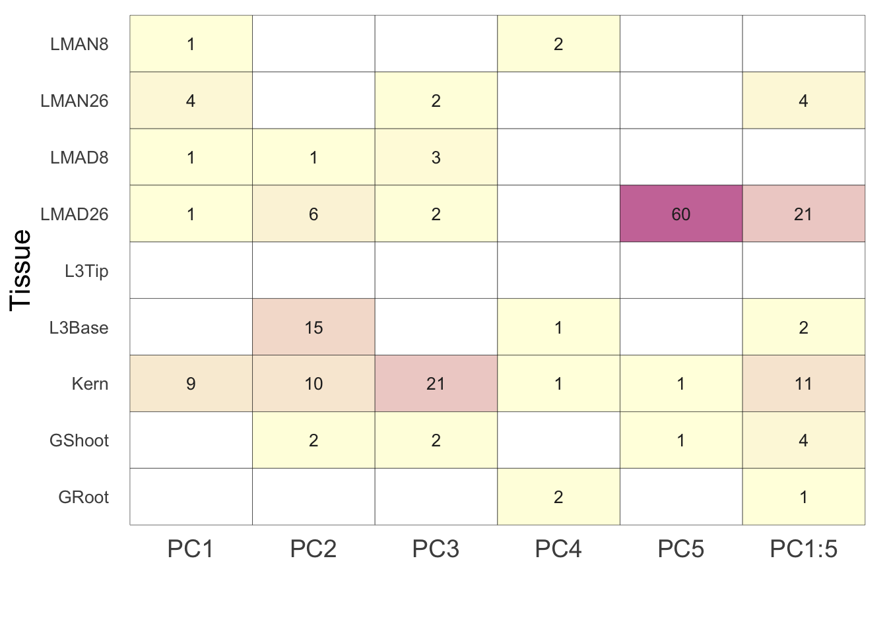
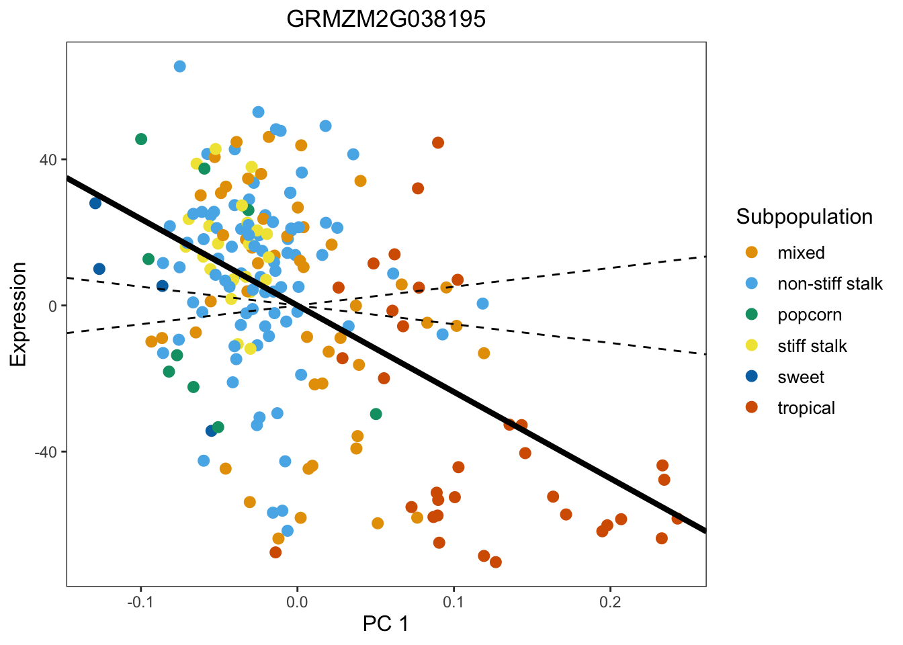
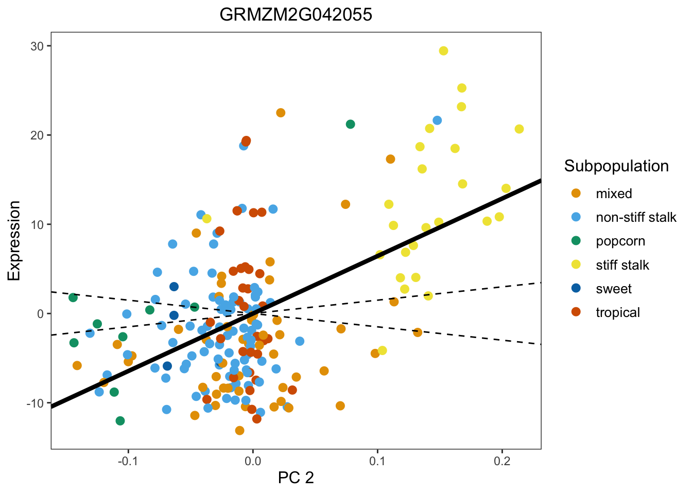
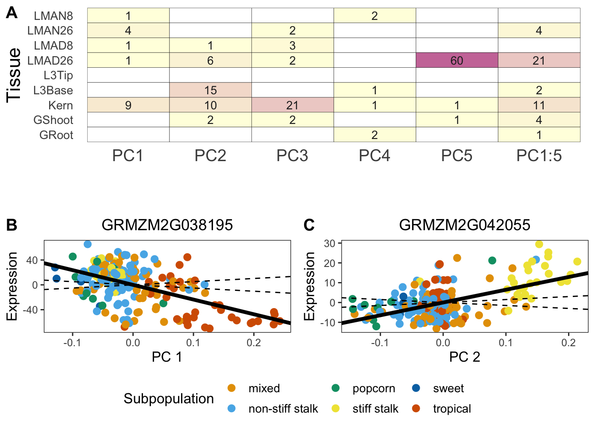

Last updated: 2020-02-17
Checks: 7 0
Knit directory: Blancetal/analysis/
This reproducible R Markdown analysis was created with workflowr (version 1.4.0). The Checks tab describes the reproducibility checks that were applied when the results were created. The Past versions tab lists the development history.
Great! Since the R Markdown file has been committed to the Git repository, you know the exact version of the code that produced these results.
Great job! The global environment was empty. Objects defined in the global environment can affect the analysis in your R Markdown file in unknown ways. For reproduciblity it’s best to always run the code in an empty environment.
The command set.seed(20200217) was run prior to running the code in the R Markdown file. Setting a seed ensures that any results that rely on randomness, e.g. subsampling or permutations, are reproducible.
Great job! Recording the operating system, R version, and package versions is critical for reproducibility.
Nice! There were no cached chunks for this analysis, so you can be confident that you successfully produced the results during this run.
Great job! Using relative paths to the files within your workflowr project makes it easier to run your code on other machines.
Great! You are using Git for version control. Tracking code development and connecting the code version to the results is critical for reproducibility. The version displayed above was the version of the Git repository at the time these results were generated.
Note that you need to be careful to ensure that all relevant files for the analysis have been committed to Git prior to generating the results (you can use wflow_publish or wflow_git_commit). workflowr only checks the R Markdown file, but you know if there are other scripts or data files that it depends on. Below is the status of the Git repository when the results were generated:
Ignored files:
Ignored: .DS_Store
Ignored: .Rproj.user/
Ignored: data/.DS_Store
Ignored: output/.DS_Store
Untracked files:
Untracked: _workflowr.yml~
Untracked: data/FlintGarciaTableS1_fixednew.csv
Untracked: data/Kinship_matrices/
Untracked: data/Mean_centered_expression/
Untracked: output/Identifying_Selected_Genes/
Unstaged changes:
Modified: _workflowr.yml
Modified: analysis/Population_Structure.Rmd
Note that any generated files, e.g. HTML, png, CSS, etc., are not included in this status report because it is ok for generated content to have uncommitted changes.
These are the previous versions of the R Markdown and HTML files. If you’ve configured a remote Git repository (see ?wflow_git_remote), click on the hyperlinks in the table below to view them.
| File | Version | Author | Date | Message |
|---|---|---|---|---|
| Rmd | 09676ba | jgblanc | 2020-02-17 | wflow_publish(c(“analysis/Identifying_Selected_Genes.Rmd”, “analysis/index.Rmd”)) |
| html | d6e709f | jgblanc | 2020-02-17 | Build site. |
| Rmd | feebd86 | jgblanc | 2020-02-17 | wflow_publish(c(“analysis/Identifying_Selected_Genes.Rmd”, “analysis/index.Rmd”)) |
Here is the code used to identify selected genes in each of the 9 tissue types and make Figure 2.
The code below will be written to identify selected genes in the Kernel tissue. This code can be re-run for other tissues by specifying the path to the expression for that tissue.
# Read in mean-centered expression values
df1 <- read.table("../data/Mean_centered_expression/Kern.txt")
# Read in tissue specific kinship matrix
myF <- read.table('../data/Kinship_matrices/F_Kern.txt')First, we will calculate the Eigen values and vectors.
## Get Eigen Values and Vectors
myE <- eigen(myF)
E_vectors <- myE$vectors
E_values <- myE$valuesNext, we will multiply the mean centered expression value by each of the m eigen vectors (numerator of equation 2). This step takes a little time (~10 minutes) so I will pre-load the results to speed up the knitting process
#df2 <- data.frame(matrix(ncol=ncol(df1), nrow=nrow(df1)))
#colnames(df2) <- colnames(df1[1:ncol(df1)])
#rownames(df2) <- rownames(df1)
## Calculate Q values by multiplying the mean-centered expression value by each eigen vector
#for (i in 1:ncol(df2)) {
# mean_centered_data <- t(as.matrix(as.numeric(df1[,i])))
# for (k in 1:nrow(df2)){
# u <- as.matrix(as.numeric(E_vectors[,k]))
# value <- mean_centered_data %*% u
# df2[k,i] <- value
# }
#}
df2 <- read.table("../output/Identifying_Selected_Genes/intermediate_df2.txt")Now divide by the square root of the eigenvalue to get the \(C_m\) value from equation 2.
## Get the square root of the Eigen values
de <- data.frame(matrix(nrow = nrow(df1),ncol = 2))
de$Egien_values <- E_values
de$Sqrt_EV <- sqrt(de$Egien_values)
## Calculate C-values by dividing Q values by the square root of the eigen values
df4 <- data.frame(matrix(ncol=ncol(df2),nrow=nrow(df2)))
for (i in 1:ncol(df2)){
df4[,i] <- (df2[,i] / de$Sqrt_EV)
}We want to get the F value (equation 3) and the corresponding p-value for each of the first 5 PC’s individually
## Calculate F-values by dividing variances
F_values <- data.frame(matrix(ncol=ncol(df2), nrow = 1))
for (j in 1:ncol(df2)){
for (i in 1:5){
q <- df4[i,j]
t <- df4[11:20,j]
var_q <- mean(q^2)
var_t <- mean(t^2)
F_value <- var_q / var_t
F_values[i,j] <- F_value
}
}
## Calculate P-values from recorded F values
P_values_ind <- data.frame(matrix(ncol=ncol(df2), nrow =1))
for (j in 1:ncol(F_values)){
for (r in 1:5) {
f_stat <- F_values[r, j]
p_value <- pf(q=f_stat, df1=1, df2=10, lower.tail=FALSE)
P_values_ind[r, j] <- p_value
}
}Finally, we want to get the F value for the first 5 PC’s combined (equation 4)
## Calculate F-values by dividing variances
F_values <- data.frame(matrix(ncol=ncol(df2), nrow = 1))
for (j in 1:ncol(df2)){
for (i in 1:1){
q <- df4[1:5,j]
t <- df4[11:20,j]
var_q <- mean(q^2)
var_t <- mean(t^2)
F_value <- var_q / var_t
F_values[i,j] <- F_value
}
}
## Calculate P-values from recorded F values
P_values_comb <- data.frame(matrix(ncol=ncol(df2), nrow =1))
for (j in 1:ncol(F_values)){
for (r in 1:1) {
f_stat <- F_values[r, j]
p_value <- pf(q=f_stat, df1=5, df2=10, lower.tail=FALSE)
P_values_comb[r, j] <- p_value
}
}The code above can be used to generate the p-values for all 9 tissues, the running this code is in “output/Identifying_Selected_Genes/”. The files labeled “ALL” have the p-values for the first 5 PC’s individually. The files labeled “Combined” have the p-values for the first 5 PC’s combined.
Read in the P-values for the first 5 PCs for each tissue
kern <- t(read.table("../output/Identifying_Selected_Genes/P_values_ALL_Kern.txt"))
gshoot <- t(read.table("../output/Identifying_Selected_Genes/P_values_ALL_GShoot.txt"))
groot <- t(read.table("../output/Identifying_Selected_Genes/P_values_ALL_GRoot.txt"))
base <- t(read.table("../output/Identifying_Selected_Genes/P_values_ALL_L3Base.txt"))
tip <- t(read.table("../output/Identifying_Selected_Genes/P_values_ALL_L3Tip.txt"))
lmad8 <- t(read.table("../output/Identifying_Selected_Genes/P_values_ALL_LMAD8.txt"))
lman8 <- t(read.table("../output/Identifying_Selected_Genes/P_values_ALL_LMAN8.txt"))
lmad26 <- t(read.table("../output/Identifying_Selected_Genes/P_values_ALL_LMAD26.txt"))
lman26 <- t(read.table("../output/Identifying_Selected_Genes/P_values_ALL_LMAN26.txt"))Calculate the Q-values for each PC in each tissue and record the number of genes with Q-value < 0.1
# Create table to collect selected genes
FDR <- as.data.frame(matrix(ncol=6, nrow=9))
colnames(FDR) <- c("PC1", "PC2", "PC3", "PC4", "PC5", "PC1:5")
rownames(FDR) <- c("Kern", "GShoot", "GRoot", "L3Base", "L3Tip", "LMAD8", "LMAN8", "LMAD26", "LMAN26")
# For each tissue calculate q-values and record the number of genes with q-values (and raw p-values) under 0.1
for (i in 1:5) {
qobj <- qvalue::qvalue(kern[,i])
FDR[1,i] <- length(qobj$qvalues[qobj$qvalues < 0.1])
}
for (i in 1:5) {
qobj <- qvalue::qvalue(gshoot[,i])
FDR[2,i] <- length(qobj$qvalues[qobj$qvalues < 0.1])
}
for (i in 1:5) {
qobj <- qvalue::qvalue(groot[,i])
FDR[3,i] <- length(qobj$qvalues[qobj$qvalues < 0.1])
}
for (i in 1:5) {
qobj <- qvalue::qvalue(base[,i])
FDR[4,i] <- length(qobj$qvalues[qobj$qvalues < 0.1])
}
for (i in 1:5) {
qobj <- qvalue::qvalue(tip[,i])
FDR[5,i] <- length(qobj$qvalues[qobj$qvalues < 0.1])
}
for (i in 1:5) {
qobj <- qvalue::qvalue(lmad8[,i])
FDR[6,i] <- length(qobj$qvalues[qobj$qvalues < 0.1])
}
for (i in 1:5) {
qobj <- qvalue::qvalue(lman8[,i])
FDR[7,i] <- length(qobj$qvalues[qobj$qvalues < 0.1])
}
for (i in 1:5) {
qobj <- qvalue::qvalue(lmad26[,i])
FDR[8,i] <- length(qobj$qvalues[qobj$qvalues < 0.1])
}
for (i in 1:5) {
qobj <- qvalue::qvalue(lman26[,i])
FDR[9,i] <- length(qobj$qvalues[qobj$qvalues < 0.1])
}Read in P-values for PC1:5 combined for each tissue
kern2 <- t(read.table("../output/Identifying_Selected_Genes/P_values_Combined_Kern.txt"))
gshoot2 <- t(read.table("../output/Identifying_Selected_Genes/P_values_Combined_GShoot.txt"))
groot2 <- t(read.table("../output/Identifying_Selected_Genes/P_values_Combined_GRoot.txt"))
base2 <- t(read.table("../output/Identifying_Selected_Genes/P_values_Combined_L3Base.txt"))
tip2 <- t(read.table("../output/Identifying_Selected_Genes/P_values_Combined_L3Tip.txt"))
lmad82 <- t(read.table("../output/Identifying_Selected_Genes/P_values_Combined_LMAD8.txt"))
lman82 <- t(read.table("../output/Identifying_Selected_Genes/P_values_Combined_LMAN8.txt"))
lmad262 <- t(read.table("../output/Identifying_Selected_Genes/P_values_Combined_LMAD26.txt"))
lman262 <- t(read.table("../output/Identifying_Selected_Genes/P_values_ALL_LMAN26.txt"))Record number of genes with qvalues < 0.1
qobj <- qvalue::qvalue(kern2[,1])
FDR[1,6] <- length(qobj$qvalues[qobj$qvalues < 0.1])
qobj <- qvalue::qvalue(gshoot2[,1])
FDR[2,6] <- length(qobj$qvalues[qobj$qvalues < 0.1])
qobj <- qvalue::qvalue(groot2[,1])
FDR[3,6] <- length(qobj$qvalues[qobj$qvalues < 0.1])
qobj <- qvalue::qvalue(base2[,1])
FDR[4,6] <- length(qobj$qvalues[qobj$qvalues < 0.1])
qobj <- qvalue::qvalue(tip2[,1])
FDR[5,6] <- length(qobj$qvalues2[qobj$qvalues < 0.1])
qobj <- qvalue::qvalue(lmad82[,1])
FDR[6,6] <- length(qobj$qvalues2[qobj$qvalues < 0.1])
qobj <- qvalue::qvalue(lman82[,1])
FDR[7,6] <- length(qobj$qvalues2[qobj$qvalues < 0.1])
qobj <- qvalue::qvalue(lmad262[,1])
FDR[8,6] <- length(qobj$qvalues[qobj$qvalues < 0.1])
qobj <- qvalue::qvalue(lman262[,1])
FDR[9,6] <- length(qobj$qvalues[qobj$qvalues < 0.1])Reshape Data for Plotting
FDR$Tissue <- c("Kern", "GShoot", "GRoot", "L3Base", "L3Tip", "LMAD8", "LMAN8", "LMAD26", "LMAN26")
dat <- melt(FDR, id.vars = "Tissue")
dat[dat == 0] <- NAPlot figure 2A
pl <- ggplot(data=dat,aes(x=variable,y=Tissue)) +
geom_tile(aes(fill=value),color='black') + scale_fill_gradient(low = 'lightyellow', high = "#CC79A7", guide = FALSE, na.value = "white") + theme_bw() + xlab("\n") + ylab("Tissue") +
theme(axis.ticks=element_blank(),panel.border=element_blank(),panel.grid.major = element_blank(), axis.text.y = element_text(size=10,angle=0), axis.title.y = element_text(size=16),axis.title.x = element_text(size=16),axis.text.x = element_text(angle = 0, hjust = 0.5,size=14)) + geom_text(aes(label=value),colour="grey15",size=3.5)
plWarning: Removed 26 rows containing missing values (geom_text).
| Version | Author | Date |
|---|---|---|
| d6e709f | jgblanc | 2020-02-17 |
Plot figure 2B
First read in population and expression information
pop <- read.csv("../data/FlintGarciaTableS1_fixednew.csv")
kern_all <- read.table("../data/Mean_centered_expression/Kern.txt")
rows <- row.names(kern_all)
kern_all$lines <- rows
pop_dat <- merge(pop, kern_all, by.x = "Inbred", by.y = "lines" )Get Eigen values and vectors
## Kinship Matrix for all 207 Kern lines
myF <- read.table('../data/Kinship_matrices/F_Kern.txt')
## Get Eigen Values and Vectors
myE <- eigen(myF)
E_vectors <- myE$vectors
E_values <- myE$valuesExpression Plot
pop_dat$sel <- kern_all[,1706]
pop_dat$one <- E_vectors[,1]
lambda <- E_values[1]
var_C11_20 <- 190.0949 #Expected denominator calculated from script
k <- 1.96 * sqrt(var_C11_20 * lambda)
k_plus <- k
k_minus <- -k
lR <- lm(pop_dat$sel ~ pop_dat$one)
coeff <- lR$coefficients[[2]]
col <- c('#E69F00', '#56B4E9', "#009E73", "#F0E442", "#0072B2", "#D55E00", "#CC79A7")
pl1 <- ggplot(data=pop_dat, aes(x = one, y= sel , color=Subpopulation)) + scale_colour_manual(values = col, labels=c("mixed", "non-stiff stalk", "popcorn", "stiff stalk", "sweet", "tropical")) + xlab("PC 1") + ylab("Expression") + theme_bw() + theme(panel.grid.major = element_blank(), panel.grid.minor = element_blank(), axis.title.y = element_text(size=12), axis.title.x = element_text(size=12), legend.position = "right", legend.title = element_text(size = 12), legend.text = element_text(size = 10), plot.title = element_text(hjust = 0.5)) + geom_point(size = 2.5) + geom_abline(slope = k_plus, linetype = 2) + geom_abline(slope = coeff, size = 1.5)+ geom_abline(slope = k_minus, linetype = 2) + ggtitle("GRMZM2G038195")
pl1
| Version | Author | Date |
|---|---|---|
| d6e709f | jgblanc | 2020-02-17 |
Plot Figure 2C
pop_dat$two <- E_vectors[,2]
pop_dat$sel <- kern_all[,1867]
lambda <- E_values[2]
# Expected denominator calculated from script
k <- 1.96 * sqrt(20.96418 * lambda)
k_plus <- k
k_minus <- -k
lR <- lm(pop_dat$sel ~ pop_dat$two)
coeff <- lR$coefficients[[2]]
pl2 <- ggplot(data=pop_dat, aes(x = two, y= sel , color=Subpopulation)) + scale_colour_manual(values = col, labels=c("mixed", "non-stiff stalk", "popcorn", "stiff stalk", "sweet", "tropical")) + xlab("PC 2") + ylab("Expression") + theme_bw() + theme(panel.grid.major = element_blank(), panel.grid.minor = element_blank(), axis.title.y = element_text(size=12), axis.title.x = element_text(size=12), legend.position = "right", legend.title = element_text(size = 12), legend.text = element_text(size = 10),plot.title = element_text(hjust = 0.5)) + geom_point(size = 2.5) + geom_abline(slope = k_plus, linetype = 2) + geom_abline(slope = coeff, size = 1.5)+ geom_abline(slope = k_minus, linetype = 2) + ggtitle('GRMZM2G042055')
pl2
| Version | Author | Date |
|---|---|---|
| d6e709f | jgblanc | 2020-02-17 |
Final Figure
final <- ggarrange(pl,
ggarrange(pl1, pl2, ncol = 2, labels = c("B", "C"),common.legend = T, legend = "bottom"),
nrow = 2,
labels = "A"
)
final
| Version | Author | Date |
|---|---|---|
| d6e709f | jgblanc | 2020-02-17 |
sessionInfo()R version 3.5.1 (2018-07-02)
Platform: x86_64-apple-darwin15.6.0 (64-bit)
Running under: macOS High Sierra 10.13.6
Matrix products: default
BLAS: /Library/Frameworks/R.framework/Versions/3.5/Resources/lib/libRblas.0.dylib
LAPACK: /Library/Frameworks/R.framework/Versions/3.5/Resources/lib/libRlapack.dylib
locale:
[1] en_US.UTF-8/en_US.UTF-8/en_US.UTF-8/C/en_US.UTF-8/en_US.UTF-8
attached base packages:
[1] stats graphics grDevices utils datasets methods base
other attached packages:
[1] ggpubr_0.2 magrittr_1.5 reshape2_1.4.3 ggplot2_3.2.1
loaded via a namespace (and not attached):
[1] Rcpp_1.0.3 compiler_3.5.1 pillar_1.4.2 git2r_0.25.2
[5] plyr_1.8.4 workflowr_1.4.0 tools_3.5.1 digest_0.6.22
[9] evaluate_0.14 lifecycle_0.1.0 tibble_2.1.3 gtable_0.3.0
[13] pkgconfig_2.0.3 rlang_0.4.1 yaml_2.2.0 xfun_0.7
[17] gridExtra_2.3 withr_2.1.2 stringr_1.4.0 dplyr_0.8.1
[21] knitr_1.23 fs_1.3.1 cowplot_0.9.4 rprojroot_1.3-2
[25] grid_3.5.1 tidyselect_0.2.5 qvalue_2.14.1 glue_1.3.1
[29] R6_2.4.1 rmarkdown_1.13 farver_2.0.1 purrr_0.3.2
[33] whisker_0.3-2 splines_3.5.1 backports_1.1.5 scales_1.1.0
[37] htmltools_0.3.6 assertthat_0.2.1 colorspace_1.4-1 labeling_0.3
[41] stringi_1.4.3 lazyeval_0.2.2 munsell_0.5.0 crayon_1.3.4